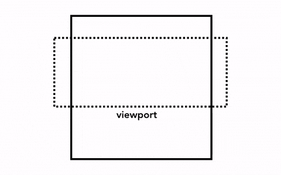
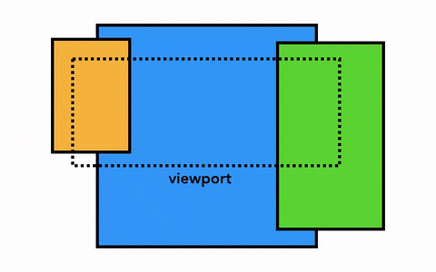
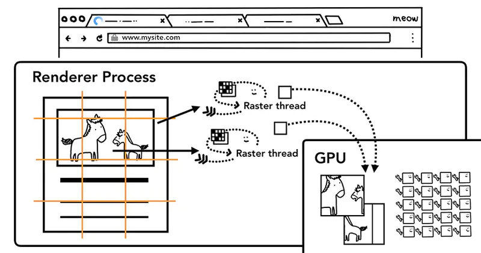

合并
文档结构、元素的样式、元素的几何关系、绘画顺序，这些信息我们都有了，这个时候如果要绘制一个页面，我们需要做的是 把这些信息转化为显示器中的像素，这个转化的过程，叫做 光栅化（rasterizing）。
那我们要绘制一个页面，最简单的做法是只光栅化视口内（viewport）的网页内容，如果用户进行了页面滚动，就移动光栅帧（rastered frame）并且光栅化更多的内容以补上页面缺失的部分，如下：
Chrome 第一个版本就是采用这种简单的绘制方式，这一方式唯一的缺点就是每当页面滚动，光栅线程都需要对新移进视图的内容进行光栅化，这是一定的性能损耗，为了优化这种情况，Chrome 采取一种更加复杂的叫做合成（compositing）的做法。
那么，什么是合成？
合成是一种将页面分成若干层，然后分别对它们进行光栅化，最后在一个单独的线程 - 合成线程（compositor thread）里面合并成一个页面的技术。当用户滚动页面时，由于页面各个层都已经被光栅化了，浏览器需要做的只是合成一个新的帧来展示滚动后的效果罢了。页面的动画效果实现也是类似，将页面上的层进行移动并构建出一个新的帧即可。
为了实现合成技术，我们需要对元素进行分层，确定哪些元素需要放置在哪一层，主线程需要遍历渲染树来创建一棵层次树（Layer Tree），对于添加了 will-change CSS 属性的元素，会被看做单独的一层，没有 will-change CSS 属性的元素，浏览器会根据情况决定是否要把该元素放在单独的层。
你可能会想要给页面上所有的元素一个单独的层，然而当页面的层超过一定的数量后，层的合成操作要比在每个帧中光栅化页面的一小部分还要慢，因此衡量你应用的渲染性能是十分重要的一件事情。
一旦 Layer Tree 被创建，渲染顺序被确定，主线程会把这些信息通知给合成器线程，合成器线程开始对层次数的每一层进行光栅化。有的层的可以达到整个页面的大小，所以合成线程需要将它们切分为一块又一块的小图块（Tiles），之后将这些小图块分别进行发送给一系列光栅线程（raster threads）进行光栅化，结束后光栅线程会将每个图块的光栅结果存在 GPU Process 的内存中。
为了优化显示体验，合成线程可以给不同的光栅线程赋予不同的优先级，将那些在视口中的或者视口附近的层先被光栅化。
当图层上面的图块都被栅格化后，合成线程会收集图块上面叫做绘画四边形（draw quads）的信息来构建一个合成帧（compositor frame）。
- 绘画四边形：包含图块在内存的位置以及图层合成后图块在页面的位置之类的信息。
- 合成帧：代表页面一个帧的内容的绘制四边形集合。
以上所有步骤完成后，合成线程就会通过 IPC 向浏览器进程（browser process）提交（commit）一个渲染帧。这个时候可能有另外一个合成帧被浏览器进程的 UI 线程（UI thread）提交以改变浏览器的 UI。这些合成帧都会被发送给 GPU 从而展示在屏幕上。如果合成线程收到页面滚动的事件，合成线程会构建另外一个合成帧发送给 GPU 来更新页面。
import React from 'react';
import img from '../../assets/browser-working-principle/composite-frame.png';
export default () => (
<img
alt="合成线程构建出合成帧，合成帧会被发送给浏览器进程然后再发送给GPU"
src={img}
width={520}
/>
);
合成的好处在于这个过程没有涉及到主线程，所以合成线程不需要等待样式的计算以及 JavaScript 完成执行。这就是为什么合成器相关的动画最流畅，如果某个动画涉及到布局或者绘制的调整，就会涉及到主线程的重新计算，自然会慢很多。
硬件加速
浏览器接收到网站页面文档后，会将文档中的标记语言解析为 DOM 树。DOM 树和 CSS 结合形成浏览器构建页面的渲染树。渲染树中包含了大量的渲染元素，每个渲染元素会被分到单独一个图层中，每个图层又会被加载到 GPU 形成渲染纹理，而图层在 GPU 中 transform 是不会触发 repaint 的，这点非常类似 3D 绘图功能，最终这些使用 transform 的图层都会由 独立的合成器进程进行处理。
CSS transform 创建新的复合图层，可以被 GPU 直接用来执行 transofmr 操作。在 Chrome 开发者工具中开启 Show Layer Border 选项后，每个复合涂层就会显示一条黄色的边界。
内部原理
每个页面元素都有一个独立的渲染进程，包含了主线程和合成线程。
- 主线程 负责脚本的执行、CSS 样式计算、计算布局位置（Layout）、将页面元素绘制成位图（Paint）、发送位图给合成线程（Compositor Thread）
- 合成线程 则主要负责将位图发送给 GPU、计算页面的可见部分和即将可见部分（滚动）、通知 GPU 绘制位图到屏幕上。加上一个点，GPU 对于动画图形的渲染处理比 CPU 要快，那么就可以达到加速的效果
当我们通过某种方法引起浏览器的 reflow 时，需要重新经历样式计算（Style Calculation）和布局（Layout）阶段，导致浏览器重新计算页面中每个 DOM 元素的尺寸及重新布局，伴随着重新进行 repaint，这个过程是非常耗时的。为了把代价降到最低，当然最好只留下合成（Composite）这个步骤最好。假设当我们改变一个容器的样式时，影响的只是它自己，并且还无需重绘，直接通过 GPU 中改变纹理的属性来改变样式，岂不是更好？
如果能让元素达到这个效果？
就是让 DOM 元素拥有自己的层（Layer）。有了层的概念，让我们从层的概念再来看浏览器的渲染过程：
- 获取 DOM 并将其分割为多个层（Render Layer）
- 将每个层栅格化，并独立地绘制进位图中
- 将这些位图作为纹理上传至 GPU
- 复合多个层来生成最终的屏幕图像（终极 Layer）
可以将这个过程理解为设计师的 Phtoshop 文件。在 PS 源文件中，一个图像是由若干个图层相互叠加而展示出来的。分成多个图层的好处就是每个图层相对独立，修改方便，对单个图层的修改不会影响到页面上的其他图层。因此层（Layer）存在的意义在于：用最小的代价来改变某个页面元素。可以将某个 CSS 动画或某个 JS 交互效果抽离到一个单独的渲染层，来达到加速渲染的目的。
创建独立图层
那么哪些规则能让浏览器主动帮我们创建独立的层呢？
- 3D 或者透视变换（
perspective和transform） 的 CSS 属性 backgace-visibility为hidden的元素- 使用加速视频解码的
<video>元素 - 拥有 3D（WebGL） 上下文或者加速 2D 上下文的
<canvas>元素 - 混合插件（Flash）
- 对
opacity、transform、filter、backdrop-filter应用了animation或者transition（需要是active的animation或者transition，当animation或者transition效果未开始或结束后，合成层也会失效） will-change设置为opacity、transform、top、left、bottom、right（其中top、left等需要设置明确的定位属性，如relative等）- 拥有加速 CSS
filter过滤器的元素 - 元素有一个包含复合层的后代节点（换句话说，就是一个元素拥有一个子元素，该子元素在自己的层里）
- 元素有一个兄弟元素在复合图层渲染，并且该兄弟元素的
z-index较小，那这个元素也会被应用到复合图层
实际优化点：
- 用
translate替代top改变 - 用
opacity替代visibility - 不要逐条修改 DOM 的样式，预先定义好
class，然后修改 DOM 的className - 把 DOM 离线后修改，比如：先把 DOM 给
display: none（有一次 Reflow 重排），然后你修改 100 次，然后再把它显示出来 - 不要把 DOM 节点的属性值放在一个循环里当成循环里的变量
- 不要使用
table布局，可能很小的一个小改动会造成整个table的重新布局 - 动画实现的速度的选择
- 对于动画新建吐槽那个
- 启用 GPU 硬件加速
开启硬件加速
CSS 中以下几个属性能触发硬件加速：
transformopacityfilterwill-change
如果有一些元素不需要用到上述属性，但是需要触发硬件加速效果，可以使用硬编码的技巧来诱导浏览器开启硬件加速。
.element {
-webkit-transform: translateZ(0);
-moz-transform: translateZ(0);
-ms-transoform: translateZ(0);
-o-transoform: translateZ(0);
transform: translateZ(0);
transform: rotateZ(360deg);
transform: translate3d(0, 0, 0);
}
这段代码的作用就是让浏览器执行 3D transform。浏览器通过该样式创建了一个独立图层，图层中的动画则有 GPU 进行预处理并且触发了硬件加速。
如果某个元素的背后是一个复杂元素，那么该元素的 repaint 操作就会耗费大量的资源，此时也可以使用上面的技巧来减少性能开销。
注意事项：
- 过多地开启硬件加速可能会耗费较多内存，因此什么时候开启硬件加速，给多少元素开启硬件加速，需要用测试结果说话
- GPU 渲染会影响字体的抗锯齿效果。这是因为 GPU 和 CPU 具有不同的渲染机制，即使最终硬件加速停止了，文本还是会在动画期间显示得很模糊